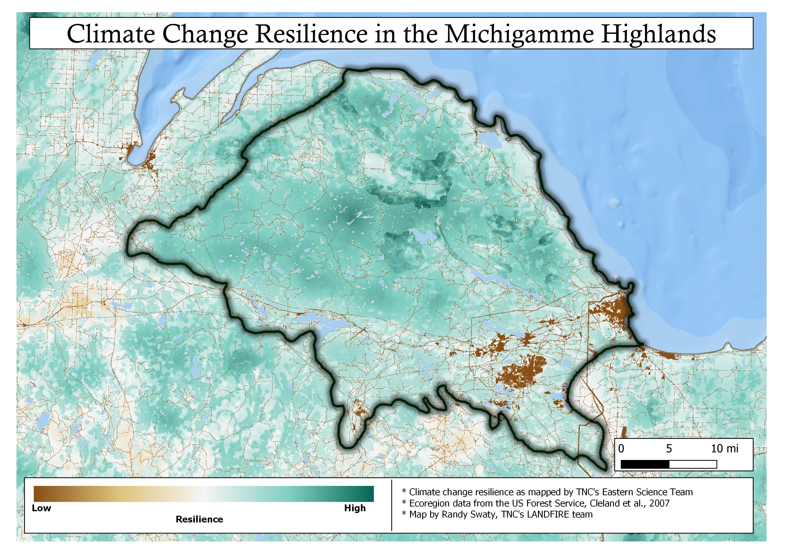

2 Our example landscape
The Michigamme Highlands
Our example landscape is in the north central region of the Upper Peninsula of Michigan (a mouthful, eh?). The largest nearby city is Marquette, MI, population 20,822 (2019). This ecoregion is ~757,000 acres (306380 hectares) and is know for its beautiful forests, rivers and lakes. It is underlain by sandstone, slate, shale and iron formations. Elevations range from around 600ft to almost 2,000 ft above sea level. The ecoregion has a humid continental climate with a growing season ranging from 75-150 days and average annual snowfall amounts reaching 200 inches in the higher terrain.
Logging and mining have been the major industrial forces in the area. Both continue today, especially logging. Mining has transitioned from largely iron to primarily nickel.
The area is of conservation interest due to the relatively high connectivity, large average land parcel size and projected climate change resiliency (see map below).
